For accounting firms looking to guarantee accurate finances and comprehensive reporting, hiring qualified personnel is essential. However, considering the specialist knowledge needed, evaluating applicants for senior accounting positions might be difficult. Using machine learning techniques, this employment process might be made more efficient and automated.
This project intends to create a model that will find applicants for senior accounting positions who meet the requirements for a given region based on their degree, experience, and desired remuneration. A dataset containing information on over 300 senior accountants, including their location, years of experience, education level, subject expertise, and goal income percentiles, will be used to train the model. Essential skills from text job descriptions will be extracted by natural language processing. Both the pay requirement and candidate eligibility will be predicted by the trained classifier.
Firms could identify the top applicants for open senior accountant positions across the globe with the use of an accurate model. Recruiting managers might quickly screen candidates based on their compensation expectations and skill set for the position. This would improve candidate quality, save hiring costs, and increase recruiting efficiency. The project offers a great deal of potential to improve accounting-related hiring.
The goal of streamlining and updating the conventional hiring procedure is what drove the creation of a Machine Learning (ML) Enhanced Recruitment Model. Machine learning algorithms can greatly increase the effectiveness of applicant selection, shorten the time it takes to make a hire, and improve the general quality of hires thanks to the abundance of data that is available. Natural language processing (NLP) techniques can be used to automate resume screening, which can speed up the process of finding qualified candidates. Additionally, by spotting trends and preferences that result in placements that go well, machine learning models that are based on hiring data from the past can help to improve the candidate matching process. Crucially, the model's capacity to reduce biases in hiring procedures is consistent with the goal of equitable and inclusive employment practices. These models, which make use of predictive analytics, give hiring managers and recruiters data-driven decision-making abilities by offering insights into trends, candidate habits, and the efficacy of different recruitment tactics. Previous work in this area has included applicant experience and diversity initiatives, resume parsing, keyword matching, predictive analytics, and more. These efforts have all contributed to the continuous advancement of ML-enhanced recruitment tactics.
Potential questions:
A web-scraped wage dataset gathered from https://www.salary.com/research/jobs and a simulated accountant dataset are loaded by the code. It merges them together to create a single dataset named as combined_data. Further, it removes missing data by substituting NaN values for empty strings and zeros, and then removing rows containing any NaN values. It also transforms column data types into suitable data types, such as texts, integers, etc. This gets a merged, clean dataset ready for examination.
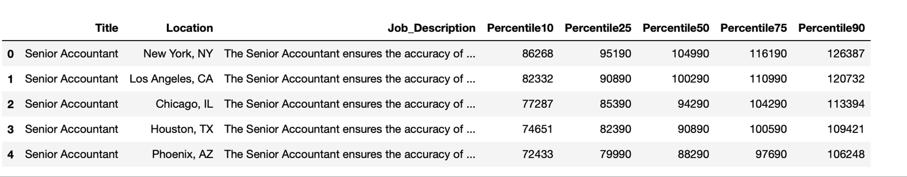Table no.1
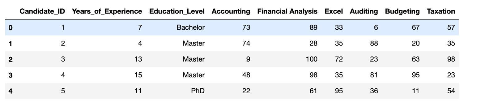Table no.2
1. Salary Percentiles Distribution
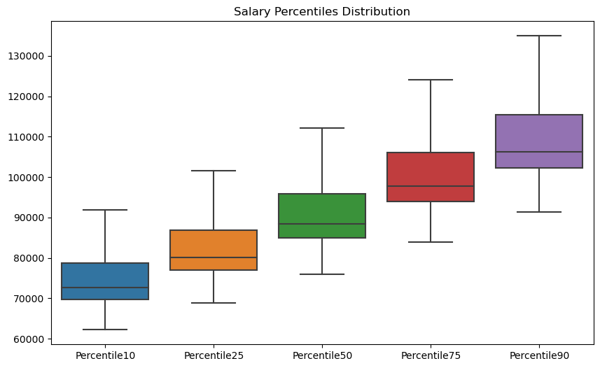In the combined_data DataFrame, you can rapidly evaluate the central tendency, spread, and existence of outliers in the salary percentiles across several columns by using above boxplot.
2. Pairplot of Skillset Scores
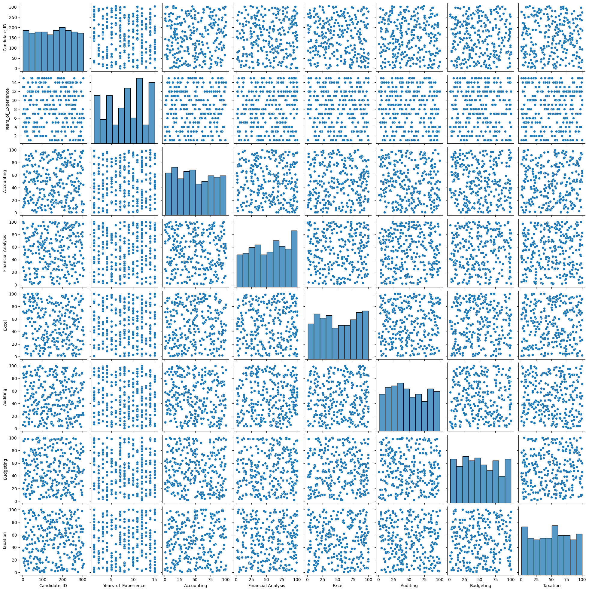The correlations and distributions between skillset scores in the combined_data DataFrame are shown in the pairplot above. The link between two skillset scores is depicted in each scatterplot in the pairplot matrix, and the super title serves as the overall title for the whole display.
3. Histogram of Median Salary
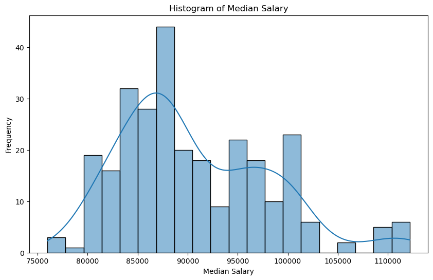The distribution of median salary in the combined_data DataFrame ('Percentile50' column) is shown by the above histogram. The kernel density estimate plot presents a smoothed picture of the underlying distribution, while the histogram sheds light on the frequency or count of various income ranges. The plot's content can be understood with the aid of the title and axis labels.
4. Number of Job Postings by Education Level
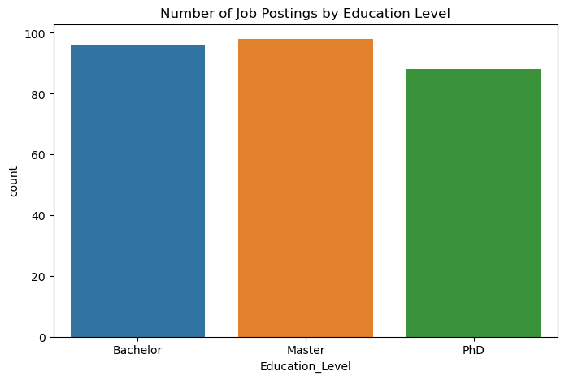The distribution of job listings in the combined_data DataFrame according to various educational levels is seen in the above count graphic. A brief summary of the quantity of job ads linked to each educational level is given by the graphic. The y-axis shows the number of job listings for each category, and the x-axis labels show the distinct education levels. The caption provides context for the plot.
5. Scatter Plot of Median Salary vs Years of Experience
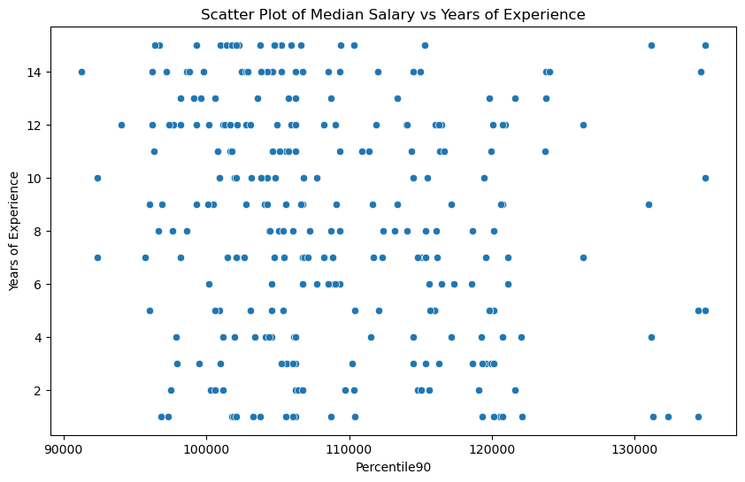The link between the 'Years_of_Experience' and 'Percentile90' columns in the combined_data DataFrame—which presumably represents the median wage at the 90th percentile—is visualized in the above scatter plot. Every point on the plot represents a job ad, and the values of years of experience and median income decide where each point is located. The scatter plot's title and axis labels aid in deciphering and comprehending its contents.
6. Pairplot of Salary Percentiles and Years_of_Experience
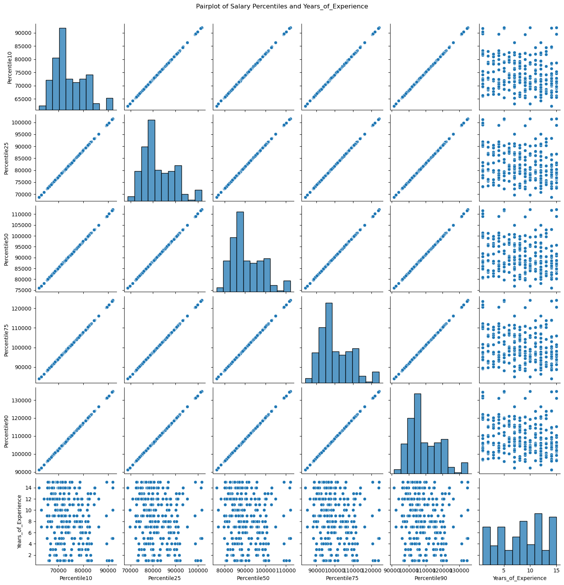The associations between the various pay percentiles ('Percentile10,' 'Percentile25,' 'Percentile50,' 'Percentile75,' 'Percentile90') and 'Years_of_Experience' are displayed in the pairplot above. The association between two variables is displayed in each scatterplot in the pairplot matrix, revealing information about the relationship between years of experience and wage percentiles. The general context of the entire visualization is given by the super title.
7. Line chart of percentiles over experience
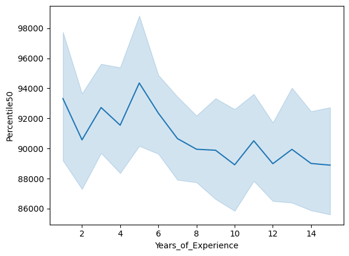The link between the 'Years_of_Experience' and 'Percentile50' columns in the combined_data DataFrame is seen in the above line plot. The graph illustrates how years of experience affect the median pay at the 50th percentile.
8. Median Salary Across Top 10 Locations with Higher Salaries
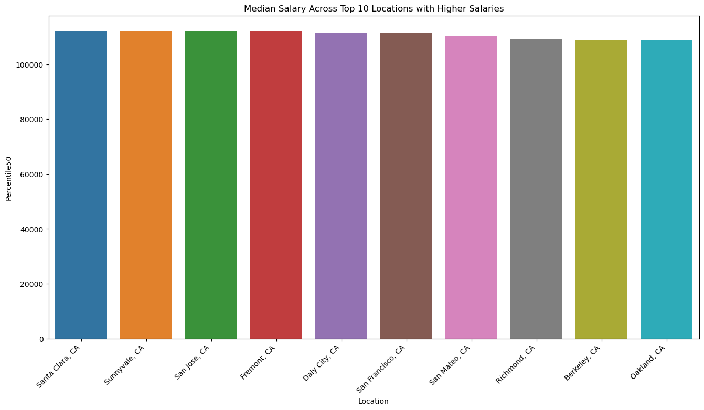The 50th percentile of the median pay for each of the top 10 places with the highest median wages is represented by the bar plot above. Plotting these places' median incomes clearly is made possible by the title, x-axis labels, and rotation modifications, all of which improve the plot's readability.
9. Top 10 Candidates Based on Median Salary and Their Skill Scores
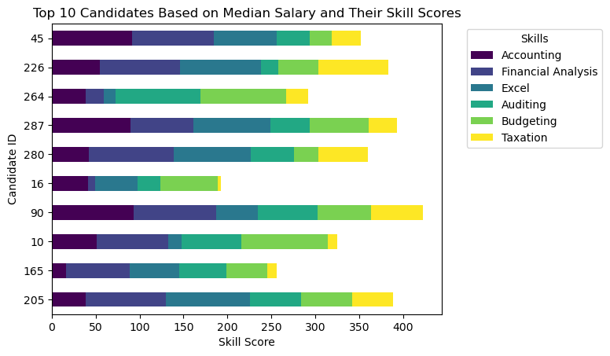The skill scores of the top 10 candidates are displayed above in a horizontal stacked bar plot according to their median wage. The stacked segments within each bar indicate the scores for different skills, and each bar itself represents a candidate. The plot becomes easier to understand thanks to the legend, title, and axis labels.
10. Salary Distribution Based on Education Level
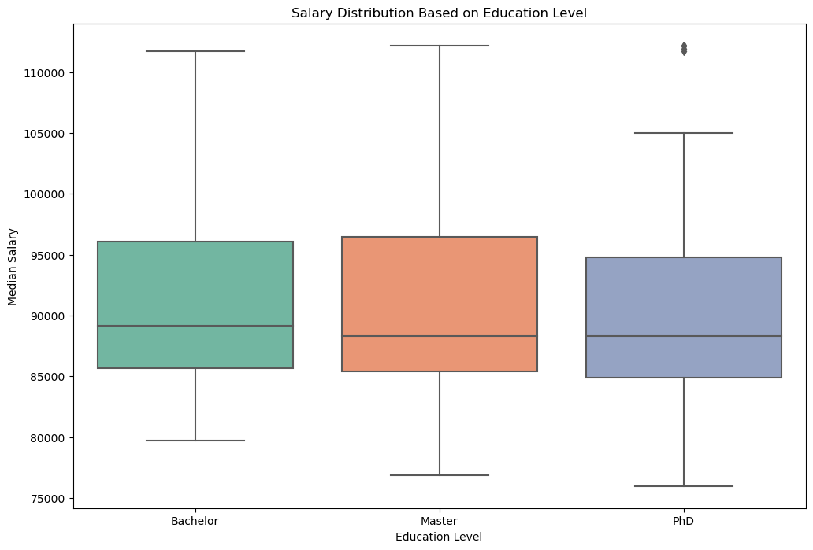The combined_data DataFrame's 50th percentile median salary distribution for various educational levels is visually represented by the boxplot above. The wage distribution for each educational level is shown in a boxplot along with information on its central tendency, spread, and any outliers. The plot's title and axis labels aid in deciphering and comprehending its meaning.
Discover insights from clustering techniques applied to the dataset in this section.
Uncover interesting association rules from the data using mining techniques.
Explore the application of Naive Bayes classification in predicting eligibility for the senior accountant position.
Understand the decision-making process through decision tree models in this section.
Delve into the use of Support Vector Machines to classify candidates based on skills and education level.
Explore regression models to predict the percentile of salary considering skills and education level.
Discover the power of neural networks in predicting eligibility and salary percentiles for senior accountant positions.
Explore the conclusions drawn from the analysis and machine learning models in this section.